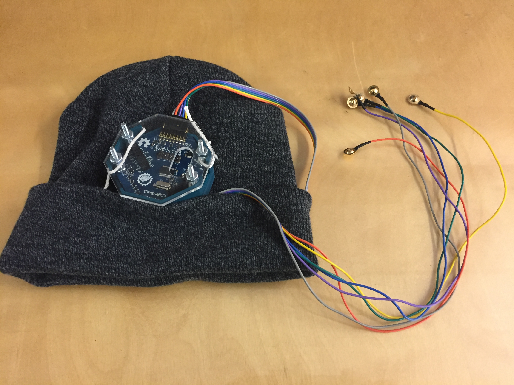
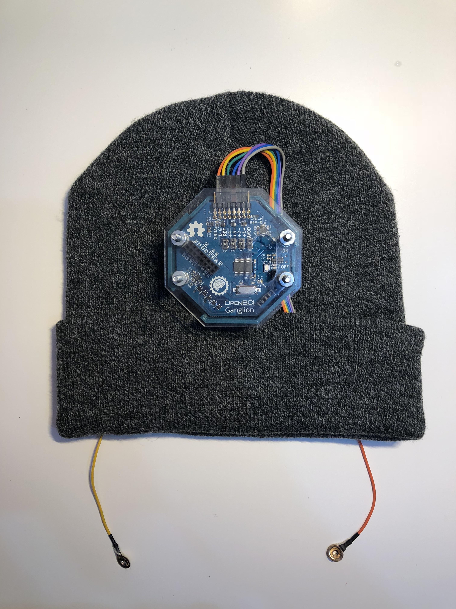

Trancendance
Trancendance is a brain-computer system that detects a users state of mind through EEG signal processing, and augments the users physical environment to achieve a desired state of mind.
The Problem
The problem Trancendance is tackling is the problem of distraction. We are constantly surrounded by distractions of all kinds: cacophonous sounds, bright lights and screens, weird smells, and temptations that draw our mind away from relaxation and focus.
We believe that by understanding what environments are conducive to our different states of mind, we will be able to influence our mental state by re-creating those environments.
We envision a world where our environment changes on demand to fit our desired state of mind.
How Trancendance Works
Trancendance is the first step in achieving our goal of controlling our state of mind. Transcendance is the combination of a EEG brain-sensing headset plus configuration software that allows the headset to calibrate how your brain reacts to being in different environments. We are narrowly defining the term environment to be the combination of light and music in your room because those are the variables we targeted to control for the first iteration of Trancendance. After a calibration period, Trancendance will store which environment was most conducive to focusing and which environment was most conducive to relaxing. When you want to relax, just tell Trancendance, and the system will adjust your environment to match the calibrated setting. Same thing with being focused.
Why focus and relaxation?
We chose to measure for focus and relaxation states within the brain because there are known relationships of brain wave frequencies that correspond with these states of mind. Distinguishing other states of mind including excitement, sadness, anger, etc. are more difficult and something we're interested in exploring further after this class.
System Architecture
Our system is broken up into 3 main groups:
- BCI Headset
- Processing and Control Software
- Audio and Visual Feedback
Our Brain-Sensing Headset
Our EEG Headset is made up of combining an OpenBCI bio-sensing board, the Ganglion Board, with Gold Cup Electrodes, a 3D printed and clear acrylic enclosure, and a comfortable hat. We cut holes in the hat and tied the Ganglion Board enclosure to the hat so nothing would fall off. Additionally, we use the natural lip of the hat to hold the long EEG wires. The Ganglion Board is powered by a compact Li-ion 3.7V battery that hides in the back of the enclosure for pleasant and compact design
Interfacing with the OpenBCI Ganglion
Our Brain-sensing headset interfaces with our control computer via Bluetooth Low Energy. The board, once it's turned on, can directly connect to the OpenBCI graphical user interface (GUI). In the OpenBCI GUI, there are fantastic visualization capabilities and settings to view everything that the Ganglion board is sensing. However, Trancendance only uses this GUI as a intermediate processing and networking black box. The GUI automatically performs the fast-fourier tranform on the raw brain signal to get the frequency spectrum of one's brainwaves. From there, the frequencies are combined into bins of frequencies that correspond to types of neurological oscillatory activities called alpha, beta, theta, delta, and gamma waves. The levels of these bands of waves are then networked via the OSC Protocol to our Python script that receives OSC packets and parses the neurological oscillatory activity.
Processing the Brain data
Our Python script, besides acting as a command line interface to calibrate and control Trancendance, does the brain signal processing to determine which music and lighting environment makes the user most relaxed and most focused.
When the python script wants to modify or change the environment, it sends a simple HTTP request to our Node.js server that runs on our local machine. The Node.js server is used to easily interface with the Spotify and Hue APIs
Interfacing with the Spotify API:
We easily interface with the Spotify API by using a Node.js npm package called Spotify Web API Node by thelinmichael on Github. Before you can use that library, you have to register and set up an application with Spotify Developer. From there, you will get the necesary application ID and secret necessary to request information from Spotify. The Spotify WebAPI Starter Tutorial was massively helpful in getting us started. From there, it's a matter of understanding scopes of different API endpoints, user authorization and authentication, and the Spotify Web API.
Interfacing with the Hue API:
The hardest part about communicating with the Hue light system was actually setting the system up. The Hue Bridge is meant to plug into your home router to connect directly to the internet. This way, when you're connected to the same network on your phone, your phone's app (or your Amazon Alexa or Google Home) just has to send a message over the local network to the Hue Bridge. What that means, though is two important things:
- You have to have a ethernet connection for your Hue Bridge to plug into.
- You can only control your lights using a device connected to the same network that your Hue Bridge is on.
Our solution to this was to get a small little travel router that we can plug into the ethernet ports in the wall, and then broadcast our own new network so that the Hue Bridge, our computer, and our phones could all be connected to the travel router's spoofed network. The issue we ran into here was that MIT restricts people from doing stuff like this. We ran into multiple issues trying to set up these networks, getting constant redirects to MIT's IS&T Network Registration page. After trying to register with IS&T, we still found restricted access to websites like Google and Facebook, while we could access sites like MIT Admissions and Wikipedia. Hmmm...
After moving from one of the computer clusters on campus to the IDC to test our network there, things were suddenly ok and we could seemingly access any webpage over our network, and the Hue Bridge was able to successfully connect. After setting up our Hue light in the iPhone App, we used Hue API Documentation to connect to the Bridge API debug interface as shown below:

From here we got a sense of what types of commands we could send to the bridge, and what the JSON structures looked like for individual lights and groups of lights. To interface with the API more easily, we ended up using a Node.js Node Hue API package from peter-murray on Github. Similar to the Spotify API, it essentailly took in some configuration details like the Bridge IP address and Username and would allow us to easily send and receive JSON messages with the Bridge to control light states.
Challenges:
The primary challenges when building and testing Trancendance were as follows:
- Getting good EEG readings while minimizing prep time
- Distinguishing mental states from EEG signals
Additionally, while researchers generally have a good sense of what brainwaves look like for focused and relaxed states of mind, other states of mind don't have quite as prescreptive a "footprint" as the above two, and so incorperating these into the first iteration of Trancendance was infeasible.
Future Outlook:
The great thing about having the above challenges is knowing that these are the types of fundamental problems that neurological research is helping to tackle. We are confident with several more years of research and development, brain interfaces and applications similar to Trancendance will emerge in a more wide-spread manner.
Additionally, with the proliferation of augmented reality headsets and systems, perhaps our definition of an "environment" that one can control will be vastly expanded to include one's augmented environment. Imagine if Trancendance knew you were in a focused state and could cause your AR headset to block out view of your cell phone, unhealthy food, or any other type of distraction? With the power of that kind of system, what would you build?
Special Thank You
A massive thank you goes out to Stefanie Mueller and Jared Countsfor putting on this class, 6.S063, at MIT for the first semester! We hope this class and the projects undertaken in this class continues to push the boundary of HCI innovation and research.
Lastly, thank you Kevin Reuß for lending us your OpenBCI Cyton board for demoing purposes when our Ganglion Board unexpectedly stopped working!